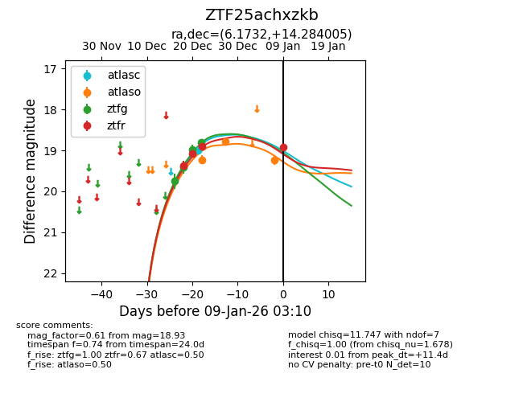
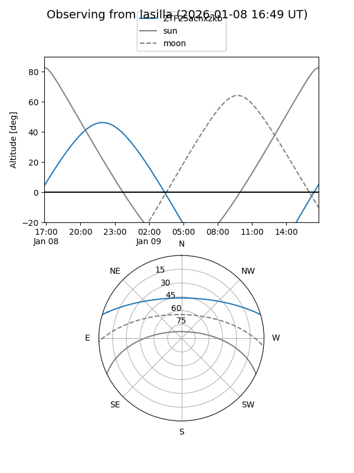
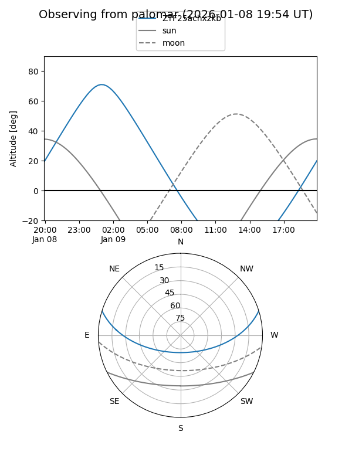
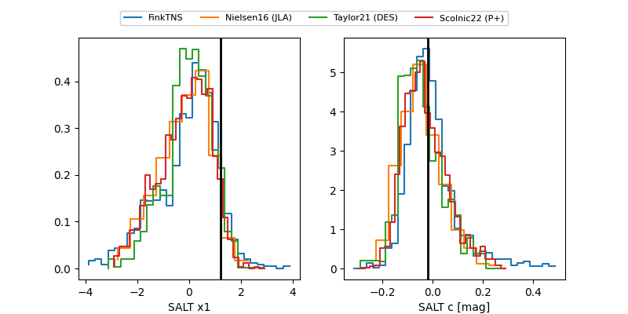

ZTF25achxzkb
Target ZTF25achxzkb at 2026-01-09 03:10
Aliases and brokers:
FINK:
Lasair:
ALeRCE:
alt names
ZTF25achxzkb (ztf,fink_ztf)
Coordinates:
equatorial (ra, dec) = 6.1732,+14.28401
equatorial (HMS+DMS) = 00:24:41.58,+14:17:02.42
galactic (l, b) = (113.2083,-48.08216)
Flags:
Photometry:
last atlasc=19.00, atlaso=19.24, ztfg=18.80, ztfr=18.93
1 atlasc, 3 atlaso, 4 ztfg, 4 ztfr detections
Lightcurve

Visibility


Additional plots
